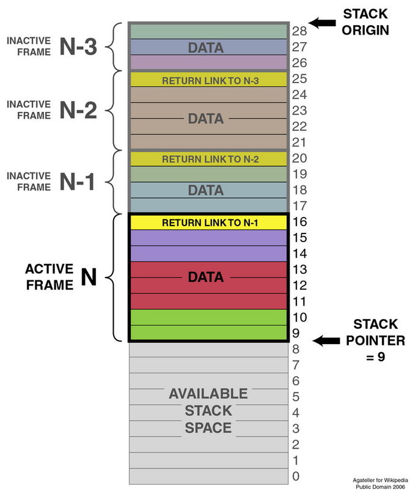

Rust L&L 2
This Is Where It Gets Interesting

A presentation by Jake Gallow
Ownership
Background: Stack and Heap Memory
Background: Stack and Heap Memory
If you get lost
Ask Questions
or...
The Rust BookThe Rules
- Each value in Rust has a variable that’s called its owner.
- There can only be one owner at a time.
- When the owner goes out of scope, the value will be dropped.
Lets look at some examples
in the bookAn Example Problem
Go to ~/dev/hackerrank/rust/src/repeated_string_group.rs